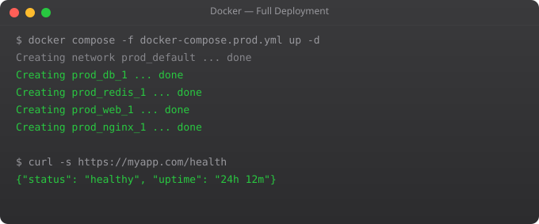

This is the part where everything comes together. Over eleven parts, you have learned containers, images, Dockerfiles, volumes, networking, Compose, registries, multi-stage builds, security, CI/CD, and Swarm. Now we build a real production project that uses all of it: a Node.js API with PostgreSQL, Redis caching, nginx reverse proxy, Docker Compose configuration, and a GitHub Actions pipeline.
This is the pattern I use in real projects. Not theoretical — practical. Copy what is useful, adapt what needs adapting.
Our stack: nginx (reverse proxy + SSL termination), Node.js API (3 replicas), PostgreSQL (persistent storage), Redis (session and cache), and a CI/CD pipeline that builds and deploys on every push to main.
version: '3.8'
services:
nginx:
image: nginx:1.25-alpine
ports:
- "80:80"
- "443:443"
volumes:
- ./nginx/nginx.conf:/etc/nginx/conf.d/default.conf:ro
- ssl-certs:/etc/nginx/ssl:ro
depends_on:
- app
restart: unless-stopped
app:
image: registry.example.com/myapp:${IMAGE_TAG:-latest}
deploy:
replicas: 3
environment:
NODE_ENV: production
DB_HOST: postgres
REDIS_HOST: redis
env_file:
- .env.production
depends_on:
postgres:
condition: service_healthy
healthcheck:
test: ["CMD", "wget", "-q", "-O-", "http://localhost:3000/health"]
interval: 30s
timeout: 10s
retries: 3
restart: unless-stopped
postgres:
image: postgres:15-alpine
volumes:
- postgres-data:/var/lib/postgresql/data
env_file:
- .env.production
healthcheck:
test: ["CMD-SHELL", "pg_isready -U $$POSTGRES_USER"]
interval: 10s
timeout: 5s
retries: 5
restart: unless-stopped
redis:
image: redis:7-alpine
command: redis-server --requirepass ${REDIS_PASSWORD}
volumes:
- redis-data:/data
restart: unless-stopped
volumes:
postgres-data:
redis-data:
ssl-certs:upstream app {
server app:3000;
}
server {
listen 80;
server_name api.yourdomain.com;
return 301 https://$host$request_uri;
}
server {
listen 443 ssl http2;
server_name api.yourdomain.com;
ssl_certificate /etc/nginx/ssl/cert.pem;
ssl_certificate_key /etc/nginx/ssl/key.pem;
location / {
proxy_pass http://app;
proxy_set_header Host $host;
proxy_set_header X-Real-IP $remote_addr;
proxy_set_header X-Forwarded-For $proxy_add_x_forwarded_for;
proxy_set_header X-Forwarded-Proto https;
}
}#!/bin/bash
set -e
IMAGE_TAG=$1
if [ -z "$IMAGE_TAG" ]; then
echo "Usage: ./deploy.sh IMAGE_TAG"
exit 1
fi
echo "Deploying image tag: $IMAGE_TAG"
# Pull new image
IMAGE_TAG=$IMAGE_TAG docker compose pull app
# Deploy with zero downtime
IMAGE_TAG=$IMAGE_TAG docker compose up -d --no-deps --scale app=6 app
sleep 15
IMAGE_TAG=$IMAGE_TAG docker compose up -d --no-deps --scale app=3 app
echo "Deployment complete"
docker compose psYou have now completed the full Docker series. You understand Docker from first principles through production deployment. The natural next step is the Kubernetes series — which takes everything you know about Docker containers and shows you how to orchestrate them at scale in production clusters. Every company running containers at scale uses Kubernetes, and Docker is the foundation everything builds on.
A production Docker deployment typically includes: a multi-stage Dockerfile for each application service, a docker-compose.yml (or Kubernetes manifests) defining all services together, nginx as a reverse proxy handling SSL termination, named volumes for all persistent data, health checks on every service, a CI/CD pipeline that builds and scans images on every commit, and a registry to store versioned images.
For simple to medium deployments (one to a few servers), Docker Compose with docker compose up -d is perfectly valid in production. For large-scale deployments across many servers needing automatic failover, self-healing, and sophisticated scheduling, move to Kubernetes or Docker Swarm. Do not let perfect be the enemy of good — Docker Compose in production is far better than ad-hoc container management.
The recommended pattern is an init container or entrypoint script that runs migrations before the application starts. In Docker Compose, use command to override the default CMD with a script that runs migrations then starts the app. In Kubernetes, use an initContainer. Always ensure migrations are idempotent — safe to run multiple times.
Run nginx as a container with a custom nginx.conf that proxy_passes to your application container by its service name (DNS resolution in Docker networks). Mount the config file as a bind mount or COPY it into a custom nginx image. For HTTPS, mount SSL certificates as volumes or use certbot in a companion container.
Use Portainer for a visual dashboard of all containers and their resource usage. Use docker stats for live resource monitoring from the CLI. Set up log forwarding to a centralized system (Loki, ELK Stack). Use health checks in your Compose file so Docker restarts unhealthy containers automatically. Set memory limits to prevent any container from consuming all host memory.